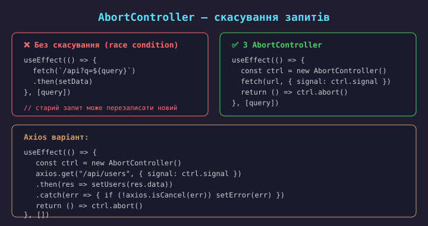

Як React взаємодіє з backend

REST (Representational State Transfer) — архітектурний стиль для побудови веб-API. Основні принципи:
/api/users, /api/products/42);React не має вбудованого API-клієнта — використовується
fetch() або сторонні бібліотеки (Axios, ky).
API-виклики не повинні бути в компонентах напряму. Правильна архітектура — розділення на шари:
api/client.ts, api/users.ts) —
HTTP-клієнт, endpoint-функції, типи запитів/відповідей;hooks/useUsers.ts) —
управління станом запиту (loading/error/data), виклик API Layer;Компонент не знає про fetch/axios — він знає лише про
useUsers(), який повертає {users, loading, error}.

import { useState, useEffect } from "react"; type User = { id: number; name: string }; function UserList() { const [users, setUsers] = useState<User[]>([]); useEffect(() => { fetch("https://api.example.com/users") .then(r => { if (!r.ok) throw new Error("Failed"); return r.json() as Promise<User[]>; }) .then(setUsers) .catch(err => console.error(err)); }, []); return ( <ul> {users.map(u => ( <li key={u.id}>{u.name}</li> ))} </ul> ); }
fetch() — нативний браузерний API.
Особливості fetch:
res.ok;.json() парсинг;AbortController для скасування.Мінус: багатослівний — для кожного запиту треба писати перевірки, headers, error handling.
→ тому використовують Axios або API Layer-абстракції.

Асинхронний запит має три можливі стани:
Помилка: використовувати лише isLoading boolean.
Неможливо розрізнити «даних немає, бо запит не вдався»
від «даних немає, бо список порожній».
Правильно: окремо status + data + error,
або об'єднати в один стан через useReducer.
Pattern: "idle" | "loading" | "success" | "error" —
status as enum.
type State<T> = { status: "idle" | "loading" | "success" | "error"; data: T | null; error: string | null; }; type Action<T> = | { type: "start" } | { type: "success"; data: T } | { type: "error"; error: string }; function reducer<T>( state: State<T>, action: Action<T> ): State<T> { switch (action.type) { case "start": return { status: "loading", data: null, error: null }; case "success": return { status: "success", data: action.data, error: null }; case "error": return { status: "error", data: null, error: action.error }; } }
// Custom Hook з useReducer export function useAsync<T>(fn: () => Promise<T>, deps: any[] = []) { const [state, dispatch] = useReducer(reducer<T>, { status: "idle", data: null, error: null }); useEffect(() => { let cancelled = false; dispatch({ type: "start" }); fn() .then(data => { if (!cancelled) dispatch({ type: "success", data }); }) .catch(err => { if (!cancelled) dispatch({ type: "error", error: err.message }); }); return () => { cancelled = true; }; }, deps); return state; }
function UserList() { const { status, data, error } = useAsync(() => api.getUsers(), []); if (status === "loading") return <Spinner />; if (status === "error") return ( <ErrorView message={error} onRetry={refetch} /> ); if (status === "success" && data.length === 0) return <EmptyState />; return ( <ul> {data.map(u => ( <li key={u.id}>{u.name}</li> ))} </ul> ); }
Шаблони UI для станів:
Важливо: показувати користувачу не просто «Error», а зрозуміле повідомлення + спосіб виправити (retry, перевірити з'єднання).
import { Component, type ReactNode } from "react"; class ErrorBoundary extends Component { state = { hasError: false }; static getDerivedStateFromError() { return { hasError: true }; } componentDidCatch(error: Error) { console.error(error); // sentry, analytics... } render() { if (this.state.hasError) return this.props.fallback; return this.props.children; } } // Використання <ErrorBoundary fallback={<ErrorView />}> <UserList /> </ErrorBoundary>
Error Boundary — React-компонент, що ловить помилки рендерингу в дочірньому дереві.
Ловить: помилки в render, lifecycle, конструкторах.
НЕ ловить: помилки в event handlers, async коді, setTimeout — для цього try/catch.
Створюються через class-компоненти
(або react-error-boundary бібліотека).
Обгортають секції застосунку: якщо впаде один блок — інші продовжать працювати.


// hooks/useUsers.ts export function useUsers() { const [state, setState] = useState< { users: User[]; loading: boolean; error: string | null } >({ users: [], loading: true, error: null }); const refetch = useCallback(async () => { setState(s => ({ ...s, loading: true, error: null })); try { const users = await api.getUsers(); setState({ users, loading: false, error: null }); } catch (e) { setState({ users: [], loading: false, error: (e as Error).message }); } }, []); useEffect(() => { refetch(); }, [refetch]); return { ...state, refetch }; }
// Використання function UserListPage() { const { users, loading, error, refetch } = useUsers(); if (loading) return <Spinner />; if (error) return ( <ErrorView msg={error} onRetry={refetch} /> ); return ( <ul> {users.map(u => ( <li key={u.id}> {u.name} <Link to={`/users/${u.id}``}>View</Link> </li> ))} </ul> ); }
function CreateUserForm() { const [name, setName] = useState(""); const [email, setEmail] = useState(""); const [saving, setSaving] = useState(false); const [error, setError] = useState(null); const handleSubmit = async (e: FormEvent) => { e.preventDefault(); setSaving(true); setError(null); try { await api.createUser({ name, email }); // redirect або refetch list navigate("/users"); } catch (err) { setError((err as Error).message); } finally { setSaving(false); } }; return ( <form onSubmit={handleSubmit}> <input value={name} onChange={...} /> <input value={email} onChange={...} /> <button disabled={saving}> {saving ? "Saving..." : "Create"} </button> {error && <p className="error">{error}</p>} </form> ); }
Стани форми Create:
Після успішного створення:
navigate);function EditUserPage({ id }: { id: string }) { const { data: user, loading } = useAsync(() => api.getUser(id), [id]); const [form, setForm] = useState(null); const [saving, setSaving] = useState(false); // Заповнити форму коли дані завантажено useEffect(() => { if (user) setForm(user); }, [user]); const handleSave = async () => { setSaving(true); try { await api.updateUser(id, form); navigate(`/users/${id}`); } finally { setSaving(false); } }; if (loading) return <Spinner />; if (!form) return null; return <UserForm value={form} onChange={setForm} onSubmit={handleSave} saving={saving} />; }
Особливості Update:
Важливо: не копіювати prop у state
напряму (anti-pattern). Використовувати
key={id} для скидання форми
при зміні id, або controlled form.
function DeleteButton({ id, onDeleted }: { id: string; onDeleted: () => void; }) { const [deleting, setDeleting] = useState(false); const handleDelete = async () => { if (!confirm("Delete this user?")) return; setDeleting(true); try { await api.deleteUser(id); onDeleted(); // refetch або navigate } catch (e) { alert("Failed to delete"); } finally { setDeleting(false); } }; return ( <button onClick={handleDelete} disabled={deleting}> {deleting ? "Deleting..." : "Delete"} </button> ); }
Особливості Delete:
confirm() або
модальне вікно (небезпечна операція);refetch() списку, абоПідтвердження можна замінити на модальне вікно з текстом «Are you sure?» + кнопки Yes/No.



✅ Підходить:
Сервер зазвичай підтверджує без помилок → користувач не чекає.
❌ Не підходить:
Тут — песимістичний підхід: чекаємо підтвердження сервера.

// api/client.ts import axios from "axios"; export const apiClient = axios.create({ baseURL: "https://api.example.com", timeout: 10000, headers: { "Content-Type": "application/json", "Accept": "application/json", }, }); // Використання const res = await apiClient.get("/users"); // res.data → JSON-відповідь (авто-parsed) // res.status → 200 // res.headers → response headers // POST await apiClient.post("/users", body); // PUT await apiClient.put(`/users/${id}`, body); // DELETE await apiClient.delete(`/users/${id}`);
Переваги Axios instance:
.json();Встановлення:
npm install axios

// api/client.ts — interceptors import axios from "axios"; export const apiClient = axios.create({ baseURL: "https://api.example.com" }); // Request interceptor — додаємо auth token apiClient.interceptors.request.use((config) => { const token = localStorage.getItem("token"); if (token) { config.headers.Authorization = `Bearer ${token}`; } return config; }); // Response interceptor — обробка помилок apiClient.interceptors.response.use( (response) => response, // success — пропускаємо (error) => { if (error.response?.status === 401) { // token expired → redirect to login localStorage.removeItem("token"); window.location.href = "/login"; } if (error.response?.status >= 500) { // server error → show toast showToast("Server error. Try later."); } return Promise.reject(error); } );
Interceptors — глобальні «фільтри» для всіх запитів/відповідей. Призначення: auth headers, error handling, logging, retry, metrics.
// types/api.ts export type User = { id: string; name: string; email: string; }; export type CreateUserDTO = { name: string; email: string; }; // api/users.ts import { apiClient } from "./client"; import type { User, CreateUserDTO } from "../types/api"; export const usersApi = { list: () => apiClient.get<User[]>("/users").then(r => r.data), getById: (id: string) => apiClient.get<User>(`/users/${id}`).then(r => r.data), create: (data: CreateUserDTO) => apiClient.post<User>("/users", data).then(r => r.data), update: (id: string, data: Partial<CreateUserDTO>) => apiClient.put<User>(`/users/${id}`, data).then(r => r.data), delete: (id: string) => apiClient.delete(`/users/${id}`), };
Переваги endpoint-функцій:
DTO (Data Transfer Object) —
тип для передачі даних у API-виклик
(напр. CreateUserDTO без id).
У hooks викликаємо usersApi.list(),
а не apiClient.get(...) напряму.

// 1. types/api.ts — типи export type User = { id: string; name: string; email: string }; // 2. api/client.ts — axios instance + interceptors export const apiClient = axios.create({ baseURL: "..." }); // 3. api/users.ts — endpoint-функції export const usersApi = { list: () => apiClient.get<User[]>("/users").then(r => r.data), create: (data: CreateUserDTO) => apiClient.post<User>("/users", data).then(r => r.data), }; // 4. hooks/useUsers.ts — state + API calls export function useUsers() { const [state, dispatch] = useReducer(reducer, initial); const refetch = async () => { dispatch({type:"start"}); await usersApi.list().then(d => dispatch({type:"success", data:d})) }; useEffect(() => { refetch() }, []); return { ...state, refetch }; } // 5. components/UserListPage.tsx — лише UI function UserListPage() { const { data, status, error } = useUsers(); if (status === "loading") return <Spinner />; return <ul>{data.map(u => <li key={u.id}>{u.name}</li>)}</ul>; }
axios напряму → винести в api/;AbortController або cancelled flag;fetch().then() без .catch.
Користувач не бачить, що щось зламалось;"https://api...".
Рішення: axios instance з baseURL;any замість дженериків.
Рішення: apiClient.get<User[]>();Server state (дані з API):
→ TanStack Query, SWR (Лекція 6)
Client state (UI state):
→ useState, useReducer, Context
На цьому етапі ми керуємо server state вручну (useEffect + fetch + useState). В Лекції 6 розглянемо TanStack Query — інструмент, що автоматизує caching, refetch, invalidation, optimistic updates.
loading / success / error (status enum),
не просто boolean. UI: spinner, error view, empty state.api/client.ts (instance) →
api/users.ts (endpoints) →
hooks/useUsers.ts (state) →
components/ (UI).